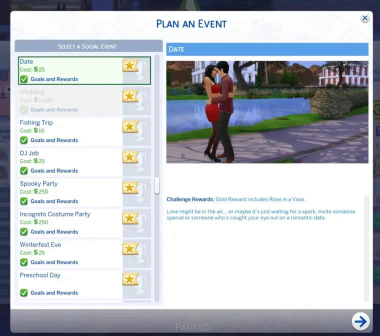
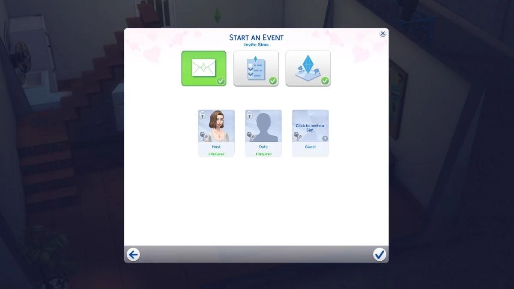
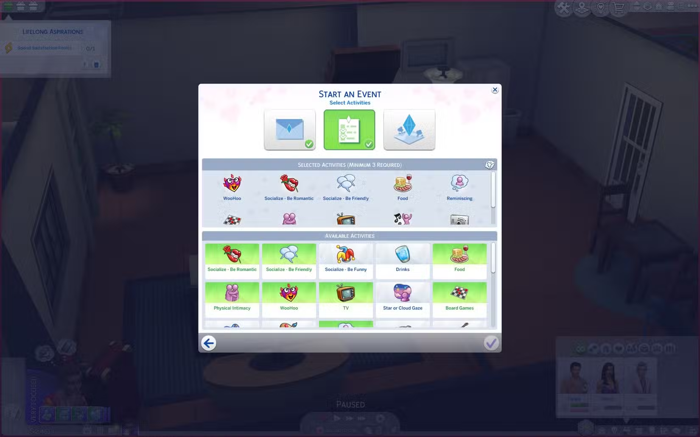

The Sims 4 · Lovestruck · Gameplay feature & UI
Create a Date & Situation Rewards
Designed and implemented Create a Date and Situation Rewards gameplay/UI features for The Sims 4: Lovestruck, collaborating with UX, engineers, and designers to evaluate implementation options, reduce technical risk, and deliver ahead of deadlines. Also improved legacy situation creation and telemetry.
Gameplay engineeringUI implementationTechnical designCross-discipline collaborationPythonActionScript 3
At a glance
Delivered Create a Date and Situation Rewards functionality, evaluating implementation alternatives with UX, engineering, and design to reduce technical risk and deliver ahead of deadlines.
In-game & interface screenshots
A closer look at the work and the experience.



Case study
My role & contribution
- Designed and implemented Create a Date and Situation Rewards gameplay/UI features.
- Collaborated with UX, engineers, and designers to evaluate implementation alternatives.
- Helped reduce technical risk and deliver ahead of deadlines.
- Took on task coordination for other engineers.
- Improved legacy situation creation and related telemetry.
Technical design & decisions
Compared implementation options with UX, engineering, and design partners, balancing technical risk with the intended player experience.
Planning & collaboration
Worked closely with UX, engineers, and designers to evaluate approaches, coordinate implementation, and deliver the feature ahead of deadlines.